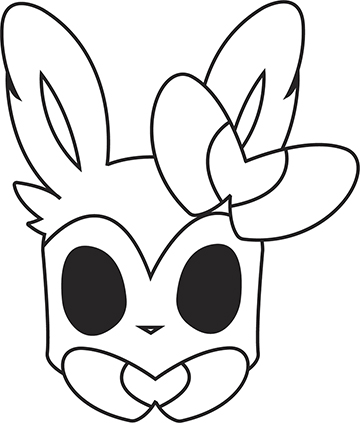
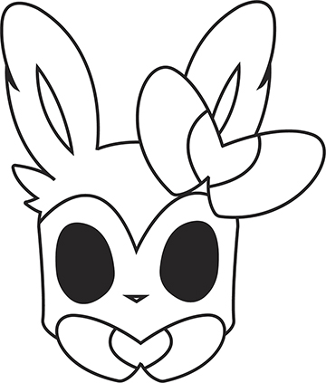

Vector Design
This page is where my vector illustrations and illustrator designs are displayed. I have used illustrator in many of my classes, all for different reasons. Click on any image to view it larger.
This page is where my vector illustrations and illustrator designs are displayed. I have used illustrator in many of my classes, all for different reasons. Click on any image to view it larger.
The logo above was for my design 1 class during the second term of my first semester in my first year in Graphic Communications. Our performance exam consisted of making a logo for one of the four prompts of our choosing. I chose the recording studio option. For that option, we have complete creative freedom, but we were only allowed to design in greyscale, to reduce costs. This logo was one of many designs I had come up with and is one of the proudest work from my first semester.
I designed this poster for my design 1 class at Saskatchewan Polytechnic in the Graphic Communication program. Our teacher asked us to create a poster based on an existing moving, using simple shapes and putting the movie poster title in the shapes using illustrator. I chose the Pokémon movie, Pokémon: I Choose You!
This vector design was created for my brother as his Christmas present from me. I screen printed it on a t-shirt in blue ink. It had to be single coloured, and that is why I designed it as one colour.
These are the evolution line of Bulbasaur, a commonly known Pokémon. I mainly designed these Pokémon because this my friend's favourite and I made vinyl stickers and created a shirt for her. This Pokémon was designed as single coloured line art because the vinyl and the screen printing had to be a single colour.
 

These are some of my first creative designs I did when I got to school. These are my versions of the well-known Pokémon that evolve from the Evolution Pokémon, Eevee. I designed the Eeveelutions as one coloured line art because I needed to create for single colour vinyl cutting and single colour screen printing. I cut these on vinyl.